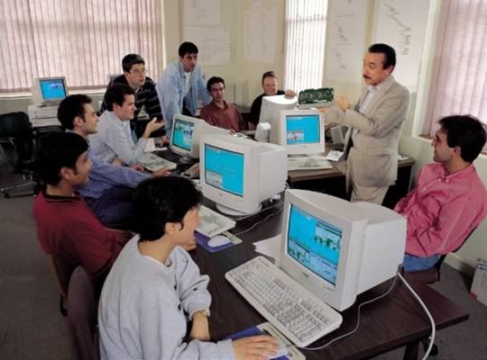

Energy Education | Energy Jobs

Florida’s utilities have predicted that the State’s energy use will increase significantly in the coming years. Energy efficiency and renewable energy generation are vital to meeting this demand. FESC’s statewide education program will produce a workforce trained to meet Florida’s energy needs. Explore the sub-menus on the left side of this page for Florida energy education opportunities sorted by discipline, institution, and degree program, along with training providers and other energy education-related resources.
FESC’s training and educational efforts are aimed at multiple levels of the career ladder: community college trained technicians, bachelors level students, graduate researchers, and practitioners who seek to update their existing skills. This statewide initiative is being distributed across partner institutions and capitalizes on each institution’s strengths to provide educational opportunities for both the conventional power generation industries and newly created energy related industries. New curricula in energy and coordinated programs across multiple universities is being developed to greatly expand the availability of energy education supporting existing and emerging energy industries in Florida. The program also includes components targeted to public and commercial sectors. For the commercial sector, the FESC Education Program is working closely with the Industrial Partners Program to ensure rapid dissemination of Center research results to this important constituent group.
The Education program has three focus areas, community college programming at the AS and certificate level, nuclear energy education, and a Masters degree in sustainable energy. FESC has also reached out to Florida’s youth through SAVE: Steps in Achieving Viable Energy. Part of Florida 4-H Youth Development, youths ages 11-13 learn what energy is, its different forms, how it is used, and how the world is impacted by energy use.
Florida’s State and Community Colleges offer an opportunity to develop a trained energy workforce through programming for two-year or four-year degrees.
FESC is working with the Florida Community College system as well as with the Florida Advanced Technological Education Center (FLATE), a National Science Foundation (NSF)-funded Regional Center that coordinates the design of industry-specific training programs for technicians. Complementary to FESC’s education goals, FLATE’s mission is to create a relevant statewide educational delivery system by supporting technical programs, curriculum development, best practices, student involvement, and outreach activities necessary to meet the workforce capacity and high performance skill needs of the manufacturing-related sectors within the state. Read a 2014 FLATE report on the Evolution and Growth of Sustainability Careers at State and Community Colleges.
At the University level, programming includes a curriculum directed at the nuclear industry workforce, which now operates five nuclear power plants (FPL and PEF). To meet the demand anticipated from retirement and expansion, FESC has made a significant investment in the UF training reactor. FESC is developing a program to promote careers in nuclear energy and is evaluating the potential development of a community college level course that will introduce students to nuclear engineering and prepare them for pursuing a degree in the field. FESC is also developing a new M.S. degree program in Sustainable Energy and Power Engineering that will be distance delivered to make it available to the broadest of audiences.